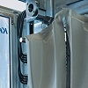
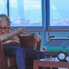
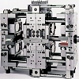
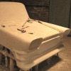
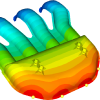
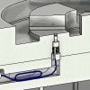

|
|
| Rapor - Makale
> Kalýp Teknolojileri: |
Hacim kalýp tasarýmý ve uygulama (bitirme tezi):
Fatih Altunbaþ, Fatih Alkan, Mustafa Ay, Marmara Üniv. TEF Makine Eð. Böl., Ýstanbul 2011
Bu tez çalýþmamýzda Enjeksiyon kalýplarýný etraflýca ele aldýk. Kalýp elemanlarýný tanýdýk. Kalýp tasarým ilkelerini anlatmaya çalýþtýk ve kalýp üretimi gerçekleþtirdik... |
 |
Kalýp içi kumaþ kaplama:
Ýlyaz Ýdrizoðlu, Makine Yük. Müh., 2011, Bursa
"Tek iþlem", kumaþ kaplama iþlemindeki yeni telaffuz edilen kelimedir. Amacý, enjeksiyon kalýplama makinelerindeki gerçek tek sefer iþleminde kaplamasý yapýlmýþ ve kalýplanmýþ parçalar üretmektir... |
 |
Sýcak yolluk sistemlerinde meme ucu (nozul) seçimi:
Hüseyin Ayar, Gazi Üniv. TEF, Kalýpçýlýk Öðretmenliði, Ocak 2012, Ankara
Bu çalýþma, kýsaca, sýcak yolluk sistemlerinin tanýtýmý, aðýrlýklý olarak ise meme ucu seçimi ve bu seçimi etkileyen faktörler hakkýndadýr... |
 |
Plastik enjeksiyon kalýp tasarýmýnda analiz yazýlýmlarýnýn yeri:
Ýlyaz Ýdrizoglu, Makine Yüksek Mühendisi, Þubat 2010, Bursa
Bu çalýþmada, "Moldflow" analiz yazýlýmý ile seçilen bir plastik parçaya hangi analizlerin yapýlabileceðini ve elde edilen sonuçlarýn neler olduðunu açýklamak hedeflenmiþtir... |
 |
Kalýp Yapým Sanatý, Otomotiv Sac-Metal Kalýpçýlýðý:
Erkan Aybaraz, GÜKÖMED, Bursa, Mayýs 2010
Otomotiv Sac-Metal Kalýpçýlýðý konusunda geçmiþten bu güne çalýþmakta olan firma sahipleriyle, ana sanayi ve yan sanayi temsilcileri ile yapýlan çekimlerden oluþan, yarým saatlik belgesel video... |
 |
Türkiye'de kalýpçýlýk geliþiyor:
Hanifi Ýçtüzer, Kalýphane Müdürü, BSH Çerkezköy, Haziran 2009, Ýstanbul
Kalýbýn her türlüsüne baðlý tüketici ürünleri üreten firmalarýn kalýp ihtiyaçlarýnýn iyi dizayn, en iyi kalite, düþük maliyet ve sonrasýndaki servis hizmetinin karþýlanmasý için yapýlan baskýlar, Türk kalýp sektörünün dünya standartlarýný yakalamasýnda çok büyük etken olmuþtur... |
 |
Plastik enjeksiyonda birden çok arayüzlü kalýp "stack mold" teknolojisi ve uygulamalarý:
Rýza Aþkar, Gazi Üniv. TEF Kalýpçýlýk Öðretimi, 2007 Ankara
Tek arayüzlü 4 gözlü kalýpta bir çevrimde 4 adet ürün elde edilebilirken, iki arayüzlü 2x4 gözlü kalýpta bir çevrimde ve hemen hemen ayný sürede 8 adet ürün elde edilebilmektedir... |
 |
Kamlý kalýplar:
Serkan Arslansoy, Kalýp Tasarýmcýsý, ADAHANFORM Ltd. Þti., Kasým 2008, Bursa
Bu çalýþmada kalýpçýlýk sektöründe çok fazla kullanýlan kamlý kalýplarýn, kam ünitelerinin çeþitleri ve nasýl kullanýldýklarý hakkýnda bilgi verilmiþtir. Kamlarýn açýlarý, kuvvetleri ve çalýþma yönleri detaylý bir þekilde açýklanmýþtýr... |
 |
Devrim arabalarýnýn tasarým boyutu:
Arif Özver Ergin, Ocak 2009, Ýstanbul
Devrim Arabalarý Türkiye'nin tamamen kendi olanaklarý ile gerçekleþtirdiði ilk deneyimdir... Bu yazýnýn amacý, Devrim Arabalarý'nýn Türkiye'nin ilk tasarýmý olup olmadýðýný sorgulamaktýr... |
 |
Plastik enjeksiyon simülasyonu:
Ahmet Barýþ Kuldaþlý, CAD/CAM/CAE Müh., UMTAÞ A.Þ., Kasým 2005, Ýstanbul
Parça tasarýmý sýrasýnda analiz programlarýnýn kullanýmý imalat aþamasýna geçildiðinde çýkabilecek sorunlarýn ortadan kalkmasýný saðlar. Tespit edilebilecek bu hatalarýn büyük bir çoðunluðu hacimsel kökenlidir ve parça tasarýmýnda küçük deðiþiklikler yapýlarak giderilebilir... |
 |
Ortak çalýþma özellikli ara plakalý ardýþýk kalýp sistemleri (stack mold):
Mustafa Kurt, Ömer Þaban Kamber, Oðuz Girit, Ekim 2005, Ýstanbul
Birden fazla kalýbýn arka arkaya eklenmesiyle birkaç kalýbýn iþlevini gören ve tek bir enjeksiyon makinesiyle çalýþan daha verimli ve üretim kapasitesi daha yüksek kalýp sistemlerine Stack kalýp sistemleri denir. Bu sistemde 2, 3 veya 4 kalýp arka arkaya eklenebilir... |
 |
Vakum döküm uygulamalý eðitim videosu:
Silikon
Kalýplama, Vakum Döküm Eðitimi (Video, Süre 13:40) Kaynak: MK Technology GmbH.
Not: Ýlk defa TurkCADCAM.net
Dergisi Ocak-Þubat 2006 Sayýsý ile birlikte verilen CD'de yer almýþ bu video, Aðustos 2008'de TurkCADCAM.net portalýndan yayýnlanmaya baþlamýþtýr. |
 |
RIVAGE konsept otomobil tasarým ve geliþtirme aþamalarý:
Bu çalýþmada amaç, Porsche Carrera 911 modeli klasik otomobil için yeni bir kabuk tasarlanýp imal edilmesidir. Modern 3D tarama ve CAD/CAM araçlarýnýn yerinde kullanýmý ve yardýmý sayesinde, yeni tasarýmýn eski iskelet ile hatasýz þekilde uyumlu olabilmesi saðlanmýþ ve tüm proje, sadece 7 ay gibi kýsa bir sürede bitirilebilmiþtir... |
 |
NUMARINE'de ürün geliþtirme çalýþmalarý:
Röportajlar: Muzaffer Erdal Kýlýç, Genel Md., Numarine A.Þ. - Can Yalman, Endüstriyel Tasarýmcý, Can Yalman Tasarým
Numarine, önemli oranda yerli katký ve kaynaklarla, yeni teknolojiler geliþtirip kullanarak Dünya çapýnda rekabetçi birçok model yat geliþtiriyor ve imal ediyor... |
 |
Standard Profil A.Þ.'de kullanýlan ürün geliþtirme teknolojileri:
(Röportaj: Müfit Çaðlayan, Ürün Geliþtirme Md. - Okan Kýzýl , Ürün Geliþtirme Md. Yard. - Dr. Tuncay Yüksel, FEA Uygulama Sorumlusu)
Standard Profil A.Þ., General Motors, Ford, Volkswagen, Audi ve Fiat gibi firmalar için sýzdýrmazlýk fitili tasarýmý, geliþtirmesiyle birlikte seri imalatýný da üstlenmektedir... |
|
Ko-enjeksiyon (co-injection molding, multi component molding, sandwich molding):
Hakan Þahin, Gazi Üniv. T.E.F. Kalýpçýlýk Öðretmenliði, Haziran 2008, Ankara
Ko-enjeksiyon yöntemi plastik enjeksiyon kalýplarý mantýðýnda fakat iki ya da daha fazla renkli ya da farklý malzemelerin ayný kalýpta kalýplanma tekniðidir. Bilinen kalýp mantýðýyla bazý farklýlýklarý vardýr; En büyük farklýlýklar kalýptaki yolluk konumlarý ve makinelerdedir... |
|
Sac metal kalýpçýlýðýnda kontrol fikstürleri:
Kurtuluþ Uçar, Gazi Üniv. TEF, Kasým 2007, Ankara
Fikstür, günümüzde kalýpçýlýk sektöründe oldukça yaygýn kullanýlmaya baþlanmýþtýr. Özellikle sac metal kalýpçýlýðýnda form ve bükme kalýplarýnýn ayrýlmaz bir parçasý olmuþtur... |
|
Plastik ürün tasarýmýnda dikkat edilmesi gereken hususlar:
Selim Yýldýrým, FARDÝZAYN, Yrd. Doç. Dr. Ahmet Demirer, Sakarya Üniv., Nisan 2008
Bu çalýþmada, malzemesi ve yöntemi seçilen plastik mamule çekme paylarý hesaba katýlarak verilmesi gerekli toleranslardan bahsedilmiþ, delikler, yuvarlatmalar, cidar kalýnlýðý, ayrým hattý, kaburgalar gibi ürün tasarýmýný etkileyen hususlar örnek þekillerle açýklanmýþtýr... |
|
Hassas kesme tekniði (fine blanking):
Rüstem Korkmaz, Gazi Üniv. Makine Eð. Böl. Kalýpçýlýk A.B.D., Kasým 2007, Ankara
Dar toleranslý ve temiz kemse yüzeyli parçalar elde etmek amacýyla uygulanan bu yöntemin 1920'li yýllara kadar giden uzun bir araþtýrma geçmiþi vardýr. Ülkemizde yeni tanýnmaya baþlanan hassas kesme batýda yaygýn olarak uygulanmaktadýr... |
|
Ürün tasarým ve ergonomisine, tasarým kriterleri etkisinin CAD/CAM/CAE ortamýnda incelenmesi:
Selim Koca, Gazi Üniv. Kalýpçýlýk Öðretmenliði, Nisan 2007, Ankara
Bu makalede, bir TV uzaktan kumanda tasarýmýný etkileyen prensipler elektronik elemanlar göz önünde bulundurulmaksýzýn tasarým kriterleri çerçevesinde CAD/CAM/CAE ortamýnda iki farklý ürün üzerinde tartýþýlmaktadýr... |
|
Vakum kalýplama yöntemi (thermoforming):
Mustafa Girgin, Gazi Üniv. T.E.F. Makine Eðitimi Böl., Kalýpçýlýk A.B.D. Mart 2007, Ankara
Vakum kalýplama yöntemi ile yapýlan ürünler, günümüz endüstrisinde kullandýðýmýz bir çok ürünü kapsamaktadýr. Bu yöntemin kullanýlmasýnýn amaçlarýnýn baþýnda düþük maliyetli kalýp tasarýmý gelmektedir. Arz talep dengesine göre bu sistemin kullanýlmasý daha avantajlýdýr... |
|
Sýcak yolluk giriþ uçlarýnda "Mold Masters" teknolojisi:
Dr. Mustafa Gevrek, MMG Müþavirlik Mühendislik, Kasým 2005, Ýstanbul
Plastik enjeksiyon kalýplarýndaki sýcak yolluk uygulamalarýnýn baþarýsý bir çok faktöre baðlýdýr. Parça üzerindeki yolluk giriþinin konumu ve yolluk giriþ tipinin seçimi, enjeksiyondan baþarýlý neticeler alabilmek için çok önemlidir... |
|
Ürün kalitesinde kararlýlýðý saðlayabilmek için plastik enjeksiyon kalýplarýnýn piezoelektrik sensörler ile denetimi:
Prof. Dr. Mustafa Kurt, Oðuz Girit, A.Talat Ýnan - Marmara Üniv. Teknik Eðitim Fakültesi
Ömer Þaban Kamber - Ýhlas Ev Aletleri A.Þ., Þubat 2006, Ýstanbul
Bu çalýþmada, deneme üretiminde elde edilen optimum baský deðerlerinin baský esnasýnda sensörler (algýlayýcý) yardýmýyla ölçülerek denetiminin nasýl yapýlabileceði ve... |
 |
Dies/Molds 2007 Konferansý'nda sunulmuþ bazý makaleler:
21-24 Haziran 2007 tarihlerinde Çeþme'de düzenlenen, 4th International Conference and Exhibition on Design and Production of Machines and Dies/Molds veya Türkçe adýyla 4. Uluslararasý Makina ve Kalýp/Model Tasarým ve Ýmalat Kongresi ve Sergisi'nde yapýlan sunumlara ait bazý makaleler (Ýngilizce, pdf formatýnda)... |
|
Ko Enjeksiyon (Birden Çok Bileþenli Enjeksiyon Kalýplarý):
Erkut Yapýcýoðlu, Gazi Üniv. Teknik Eðitim Fakültesi, Aralýk 2005, Ankara
Ko enjeksiyon, diðer adýyla birden çok bileþenli enjeksiyon kalýplarýdýr. Ko enjeksiyon farklý renk plastiklerin ya da farklý plastiklerin tek kalýpta basýlmasýna olanak saðlayan bir tekniktir, ilk olarak 1967 yýlýnda Ýngiltere'de ICI firmasý tarafýndan geliþtirilmiþtir... |
|
Kalýp imalatçýlarýmýzýn sýkýntýsý; Uzakdoðulu kalýp firmalarý:
Sezgin Uzcan, HRS Mühendislik&Tasarým, Mayýs 2007, Ýstanbul
Son yýllarda tüm yerli kalýp üreticisi firmalarýn karþýsýna rakip olarak çýkan, Uzakdoðu'lu kalýp firmalarý ile öncelikli olarak fiyat ve üretim süreleri konularýnda kýyaslanmak üretici firmalarýn sektör deðiþtirme ya da piyasadan çekilme gibi olumsuz sonuçlara sebep olmaktadýr... |
|
Bir kalýp kaç para?.. (Kalýp fiyatlandýrmasý nasýl yapýlýr?):
Sezgin Uzcan,
2M Çözüm Mühendislik, Ocak 2006, Ýstanbul
Hizmeti talep eden ne istediðini açýk ve net bir þekilde ortaya koymalý ki, hizmeti veren ya da hizmet vermeye aday tüm imalatçýlar da ayný taleplere göre teklif sunsunlar. Aksi halde farklý kalýp malzemeleri ve üretim þekillerinin doðuracaðý farklý maliyetler ortaya çýkacaktýr... |
|
Bilgisayar destekli plastik enjeksiyon kalýbý tasarýmý:
Bilen Emek Abalý, ÝTÜ Makine Müh. Böl., Þubat 2006, Ýstanbul
Bu çalýþmada, plastik enjeksiyon üretim yönteminin avantajlarý ve geliþmiþ özelliklere sahip polimer malzemelerin çeþitliliði ile ülkemizde de yaygýn mühendislik çalýþmalarýyla geliþen plastik enjeksiyon kalýbý tasarýmcýlýðýnda yeri artan bilgisayar destekli konstrüksiyonun kullanýmý ve basit bir kalýp tasarýmýnda uygulamalý örneklenmesi hedeflenmektedir... |
|
Plastik enjeksiyon kalýpçýlýðýnda ters açýlar ve maçalar:
Yalçýn Çýnar,
Taybor Mak. Kalýp San.,
Þubat 2007, Manisa
Kalýplanan ürünün þekil ve ebatlarýna göre, kalýbýn birden fazla açýlma çizgisi bulunabilir. Açýlma çizgisi sayýsýna göre de kalýplar birkaç parçaya ayrýlýr. Ürün üzerinde kalýp ayrým düzlemlerine dik eksenlerde figürler varsa, bunlara ters açýlar (undercut) denir. Bu bölgelerin kalýplanabilmesi için "maça" adý verilen sistemler kullanýlýr... |
|
Silikon kalýplama ve vakum altýnda döküm:
Celal Selim Yýldýrým, Fardizayn Ltd. Þti., Kocaeli, Ocak 2007
Bu iþlem, üretilecek parçanýn modelinin üretilmesinden sonra yapýlan ve parçanýn deðiþik sayýlarda eþlerinin üretilmesine yönelik bir iþlemdir. Bu amaca yönelik olarak parçanýn modeli HPÜ (Hýzlý Prototip Üretim) sistemleri kullanýlarak hýzlý bir þekilde üretilebilir. Elde edilen prototip, parçanýn silikon kalýbýnýn üretilmesi iþleminde ana model olarak kullanýlýr... |
|
Röportaj
> LaserCUSING ile kalýp imalatý:
Mehmet Cenk Sinirlioðlu, CONCEPT Laser GmbH, Ocak 2006,
Ýstanbul
LaserCUSING
teknolojisi, kýsaca SLS yönteminde de olduðu gibi metal
tozunun kat kat yüzeye serilip, her katýn lazer ile
tam olarak eritilmesidir. CNC frezeye göre insan gücü
olmadan çalýþtýðýndan daha hýzlý üretim yapabilir. Ayrýca
diðer yöntemlerle mümkün olmayan parça içindeki karmaþýk
soðutma kanallarý da ancak bu yöntemle mümkündür... |
|
Plastik
enjeksiyon kalýpçýlýðýnda verimlilik ve maliyet:
Yalçýn
Çýnar, Taybor Mak. Kalýp San., Aðustos 2006, Manisa
Bir kalýbýn verimliliði, kalýbý oluþturan sistemlerin
verimliliði ile belirlenir. Kalýplar çok hýzlý çalýþmalarýna
raðmen sýk sýk bakým ve onarým için durdurulurlar. Bu
durumlarda ürün alamadýðýmýz için, üretim maliyeti en
yüksek seviyededir. Normalden yavaþ çalýþan kalýplarda,
ürün maliyetini artýracaðý için tercih edilmezler. Plastik
enjeksiyon kalýpçýlýðýndaki her bir ünite için ayný þey
söylenebilir...
|
|
Hassas
kalýplarýn yüksek prodüktivite ile üretilme usulleri:
Michael H. Heisenberg, Maysan A.Þ., Nisan 2006, Ýstanbul
Takým
tezgahlarý modern teknolojik ilerlemelerin sunduðu imkanlardan
en iyi þekilde faydalanmaktadýr... Tüm dünyada gördüðümüz
bu geliþmelerin en büyük faydasý da müþterilerin kullanýlmasý
kolay ve hassas tezgahlarda mükemmele yakýn kalýplarý
daha kýsa zamanda ve daha ucuza üretebilmeleri, böylece
global rekabet yarýþýnda geri saflara düþmekten kendilerini
korumalarýdýr...
|
|
Basýnçlý
metal döküm makine ve kalýplarý:
Erkan Kahraman, Yrd. Doç. Dr. Çetin Karataþ, Gazi
Üniv. Teknik Eðitim Fak. Makine Böl., Mayýs 2005
Alüminyum,
kalay, kurþun, bakýr, inko gibi hafif alaþýmlarýn kaliteli,
hassas ayný zamanda seri bir þekilde üretebilmek için
basýnçlý döküm yöntemi tercih edilmektedir. Basýnçlý
pres dökümde; üretilecek malzemenin alaþýmý, mekanik
özellikleri göz önüne alýnarak parçanýn kalýplanmasý
sýcak ve soðuk kamaralý olarak iki yöntem ile yapýlmaktadýr... |
|
Vakum
kalýplama:
Erol Büker, Gazi Üniv. T.E.F. Makine Eð. Böl. Kalýpçýlýk
A.B.D., Mayýs 2005, Ankara
Sýcak
biçimlendirme yöntemi, günümüzde çok yaygýn olarak kullanýlan
plastik iþleme ve form verme metotlarýndan biridir. Üretilecek
olan parçanýn ana biçimi, bir tarafý açýk, içi boþ ve
ince cidarlý biçimdedir. Bu yöntemle içi dolu ürünlerin
üretimi yapýlamaz...
|
|
Mikro
Kalýplama Teknolojisi:
Mustafa
Turgut, Gazi Üniv. TEF Kalýpçýlýk Öðretmenliði Böl., Aðustos
2004, Ankara
Geleneksel
kalýplama teknolojisi ile üretilebilecek boyutlarýnýn
altýndaki ürünlerin üretilebilmesi mikro kalýplama teknolojisi
ile saðlanmaktadýr. Kalýba mikro figürlerin iþlenebilmesi
için yeni teknolojiler kullanýlýr. Ayrýca enjeksiyon
makinesinin tasarýmýnda ve enjeksiyon parametrelerinde
yapýlan deðiþiklikler sayesinde mikro ürünler kalýplanmaktadýr. |
|
Sýcak
yolluk sistemi ve etkileri:
Erkan
Kahraman, Gazi Üniv. Teknik Eðitim Fak. Makine Böl., Mayýs
2005
Son
yýllarda günümüz teknolojisinde hacim kalýplarýnda plastiklerin
þekillendirilmesi sýcak yolluk sisteminin önemli ölçüde
enerji, iþçilik ve malzeme kazançlarýnýn yanýnda bir
çok avantajlar getirmesi nedeniyle kullanýmý giderek
artmaktadýr. Sýcak yolluk sistemi saðladýðý avantajlarýn
yaný sýra kendine has özellikleri ve gereksinimleri
vardýr... |
|
Plastik
enjeksiyon kalýplarýnda sýcak yolluk sistemleri:
Dr.
Mustafa Gevrek, MMG Müþavirlik Mühendislik San. ve Tic.
Ltd. Þti., Mart 2003
Tarihçe ve Genel Özellikler, Sýcak Yolluklu Kalýplarýn
Çalýþtýrýlmasý, Sýcak Yollukla Ýlgili Problemler ve Çözümleri...
|
|
Plastik enjeksiyonla
üretimde verimliliði arttýrma yöntemleri:
Dr. Mustafa Gevrek, MMG Müþavirlik Mühendislik San.
ve Tic. Ltd. Þti.
Verimliliðin ve hýzlý çevrimin önemi, 9 soru ve 9 cevapla
verimliliði arttýrma yöntemleri... |
|
Kum Döküm
Model Tasarýmýnda Dikkat Edilecek Hususlar:
Turgay AVCI, Sultanahmet Endüstri Meslek Lisesi Model
Bölümü Öðretmeni |
|
|
|
|
TurkCADCAM.net > Türkiye'nin yeni ürün tasarım, geliştirme, CAD/CAM/CAE, CNC, kalıp ve imalat teknolojileri portalı |
*****
Sektörün profesyonel bilgi ve işbirliği platformu ***** |
|
|
|
|
|
|